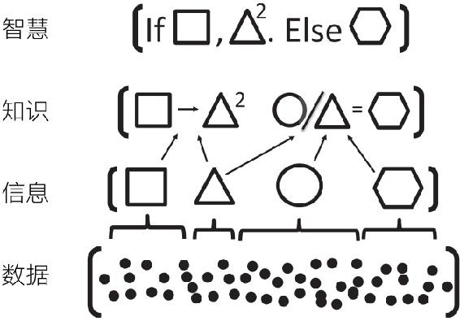

为什么需要模型思维¶
无论数据给我们留下的印象如何深刻，它都不是灵丹妙药，我们也许可以通过数据了解到已经发生了什么和正在发生什么，但由于现代世界是高度复杂的，我们可能很难理解为什么会发生这种情况。更何况，经验事实本身也可能 是误导性的。
我们需要模型，不然就无法理解计算机屏幕上不断滑过的数据流。因此，这个时代，可能恰恰因为我们拥有如此多的数据，也可以被称为多模型时代。
为什么需要多模型¶
多模型方法背后的原理基于这样一个古老的思想，那就是“管中窥豹多管齐下”。
所有模型都有三个共同特征：
- 它们都要简化，剥离不必要的细节，抽象掉若干现实世界中的因素，或者需要从头重新创造
- 它们都是形式化的， 要给出精确的定义
- 所有模型都是错误的，因为它们都是简化的，省略掉了细节
通过同时考虑多个模型，我们可以实现多个可能情况的交叉，从而克服单个模型因严格而导致的狭隘性。
智慧层次结构¶

多模型思考者¶
在我们对世界的了解变得更多、更深入的同时， 这个世界也变得更加复杂了。考虑到这种复杂性，任何单个模型都更有可能遭到失败。我们应该成为多模型思考者。
构建模型是一门艺术，只能通过不断实践才能熟练掌握。这不是一项以观赏为目的的活动，需要刻意练习。在建模中，数学和逻辑扮演着专家教练的角色 ，它们会纠正我们的缺漏。
模型的7大用途¶
构建模型的3种方法¶
无论哪一种模型，都必须是易于处理且便于交流的。
- 具身法 embodiment approach
- 类比法 analogy approach
- 另类现实法 alternative reality approach：有意不去表征、不去刻画现实。这种模型有助于我们更好地理解现实世界中各种约束条件的含义，还允许我们进行现实世界中不可能的（思想）实验
模型的7大用途¶
- 推理：识别条件并推断逻辑含义
- 构建模型时，我们要先确定最重要的行为人（行动者）、实体以及相关特征
- 然后，描述这些组成部分如何互动和聚合
- 推导出一些东西，并说明原因
- 逻辑也可以提示悖论和数学关系，真理的条件性
- **相反的谚语经常共存，但相反的定理不会出现。两个定理，如果对何为最优行动有不同看法，必定会做出不同预测；或者，给出不同解释的定理必定有不同的假设。
- 解释：为经验现象提供（可检验的）解释
- 模型为经验现象提供清晰的逻辑解释。
- 基于模型的解释必须包括正式的假设和明确的因果链条，而且这些假设和因果链条都要面对数据。
- 设计：选择制度、政策和规则的特征
- 模型还可以通过提供框架来帮助设计，因为只有在适当的框架内我们才可以考虑不同选择的含义
- 沟通：将知识与理解联系起来
- 模型要求对相关特征及其关系给出正式的定义，这使我们能够精确地进行交流
- 行动：指导政策选择和战略行动
- 指导行动的模型通常依赖于数据，但并不是全部模型都依赖于数据。大多数政策模型都需要使用数学公式，但也并非总是如此。
- 预测：对未来和未知现象进行数值和分类预测
- 预测毕竟是与解释不同的，有的模型可以用来预测，但是却不一定能解释什么，例如深度学习算法可以预测产品的销售情况等，但无法提供解释。
- 有些模型有很强的解释力，但是在预测上却没有什么价值，例如板块构造论模型可以解释地震怎么发生，但不能预测地震；动力系统模型可以解释飓风怎样形成，但无法准确预测飓风什么时候来
- 探索：分析探索可能性和假说
- 我们可以利用模型对假说进行探索，或模拟现实世界不会出现的情况
多模型思维¶
没有什么比现实主义更不真实了……细节令人困惑。只有通过选择、通过消除、通过强调，我们才能获得事物的真正意义。
乔治娅·奥·吉弗 Georgia O’ Keeffe
一对多的过程对创造力的要求很高。它考验思考者面对问题时能想到多少种模型来验证
对人类行为者建模¶
我们怎样对人建模，归根到底取决于问题的背景和想要实现的目标。我们是在预测还是解释？是在评估政策行动吗？是在尝试设计一种制度吗？或者在探索？
很多人在经济学入门课程中第一次接触到描述社会现象的正式模型，这些经济学模型通常依赖一个基本的理性行为者模型——每个人都是自利的，并且有能力实现优化。基于这种经验，许多人推断，构建正式的模型需要一种狭隘的、不切实际的”人性观“，也就是说，必须假设所有都是自私的，而且从来不会犯错，但事实并非如此。
无论做出什么假设，我们都无法摆脱假设的影响。我们被绑在逻辑一致性的“桅杆”上，不能随便制造影响。
理性行为者模型是起到“黄金标准”的作用，还是“稻草人”的作用，抑或是介于这两者之间，都取决于模型的目的。理性行为者模型在预测人类行为方面的作用，不如作为沟通、评估行动和设计政策的工具那么成功。
理性行为者模型¶
- 人们往往会表现得“似乎”在最优化
- 即使人们确实会犯错，但在重复的情况下，人们的学习能力也会失去人们接近最优行为
- 在“赌注”（利害关系）很大的情况下，人们更应该投入足够的时间和精力来做出接近最优的选择
- 理性行为者模型简化了分析，即使知道某个答案是错误的，它也可能比完全没有答案更有用，因为它至少允许我们将模型转化为数据，并讨论某些变量的变化会带来什么影响
- 理性行为者假设保证了内部一致性
- 理性可以作为基准，在设计政策、做出预测或选择行动时，我们应该考虑如果人有理性偏好并且进行最优化时会发生什么，这种做法可能帮助我们找出思维中存在的缺陷
选择理性行为者模型的理由：
- 似乎：基于智能规则做出的行为可能与最优或近似最优行为无法区分
- 学习：在重复的情况下，人们应该能够接近最优行为
- 大的“赌注”：在重大决策中，人们会收集信息并认真思考
- 唯一性：最优行为通常是唯一的，从而使模型成为可检验的
- 一致性：最优行为创建一致的模型。如果人们学会了利用这样的模型，就不会改变自己的行为
- 基准：最优行为提供了一个基准，作为人们认知能力的上限
基于规则的行为者¶
- 基于简单固定规则行事的人
- 零智能规则zero intelligence rule：接受任何能够带来更高收益的报价
- 基于适应性规则行事的人：能够根据信息、过去的成功或者通过观察他人的行为而改变自己的行为。
- 爱尔法鲁模型
损失厌恶和双曲贴现¶
在尝试构建更符合现实的模型时，我们必须牢记易处理性这个原则。更符合现实的模型可能需要更复杂的数学。
- 损失厌恶：面对收益时，人们表现为风险厌恶，面对损失时，人们却表现为风险偏好
- 双曲贴现：人们对近期的贴现更强。标准经济模型假设的是指数贴现，即人们对未来会以恒定的贴现率贴现，但大量证据表明，大多数人会受即时性偏差的影响：对近期的贴现率远远高于更远的未来。
模型产生了什么样的结果¶
政策或环境的变化可能引起受影响者的行为反应。因此，使用过去的行为数据估计的模型将不准确。模型必须考虑到人们对政策的环境变化做出反应这一事实。 Lucas critique
模型产生的结果 —— 均衡、周期、随机性、复杂性¶
-
随机性：如果模型在宏观层面上产生随机性，那么个人可能无法学到任何东西
-
均衡：产生均衡的模型可以创造珍上稳定的环境，可以期望人们可以学习并找到最优选择。
- 如果模型产生了均衡（或简单的周期），并且均衡与优化行为不一致，那就意味着我们的模型存在逻辑缺陷。如果人们可以采取更好的行动，他们应该可以弄清楚，他们应该学习。但是，为了达到均衡，我们并不需要假设最优化行为，因为人们不一定会采取最优化行为达到均衡状态。
- 如果可以采取任何行动的适应性规则产生了均衡，那么这种均衡必定与致力于最优化的行为主体的行为一致。如果同样的适应性规则产生了复杂性，那么行为主体的行为就不一定是最优的。
-
最优行为可能是一种不切实际的假设，特别是在复杂情况下。
-
周期：产生周期的模型可以创造珍上稳定的环境
-
复杂性：如果模型产生了复杂性，人们可能不会选择最优反应
我们需要在每种情况下尽可能做出最好的判断。考虑各种各样的不确定性，我们应该往构建更多模型的方向试错，而不是更少的模型。
即使我们倾向于认为理性选择模型不切实际，也必须认识到它们的易处理性，它们所拥有的揭示激励的正确方向的能力，以及它们作为基准的价值。简单的基于规则的行为，比如零智能，也是不现实的，但它们仍然可以用来提示给定环境下智能的重要性。
人类行为发生在零智能与完全理性这两种极端情况之间，因此构建行为个体利用适应性规则的模型是有意义的。
我们可能无法准确地预测人们会做什么，但也许能够确定一系列可能性。如果可以的话，就应该多构建一些模型。
在构建关于人的模型时，建模者必须非常谦卑。由于面临着多样性、社会的影响、认知错误、目的性和适应性等多种挑战，我们的模型不可避免地会出现这样那样的问题，这也正是需要采用多模型方法的原因。